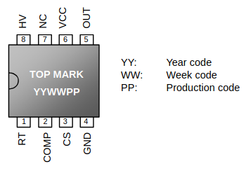

ШИМ-контроллер с режимом "Green Mode" и с высоковольтной пусковой схемой
REV: 04b
Общее описание
LD7575 — это ШИМ-контроллер с отличной энергосберегающей работой. Он оснащен высоковольтным источником тока для прямой подачи пускового тока от конденсатора и, кроме того, обеспечивает пусковую схему без энергетических потерь. Интегрированные функции, такие как подавление сигнала измерения тока на переднем фронте, внутренняя компенсация спуска, и компактный корпус, обеспечивают пользователям высокоэффективное, c минимальнsv количествоv внешних компонент решение для создания устройств переменного/постоянного тока.
Кроме того, встроенная защита от перенапряжения, защита от перегрузки и специальное управление в «зеленом» режиме позволяют пользователям легко проектировать высокопроизводительные силовые схемы. LD7575 предлагается в корпусах SOP-8 и DIP-8.
Характеристики
- Схема запуска при высоком напряжении (500 В)
- Управление в токовом режиме
- Бесшумное управление в зеленом режиме
- UVLO (Under Voltage Lockout) - блокировка при пониженном напряжении
- LEB (Leading-Edge Blanking) - заглушка переднего фронта на выводе CS
- Программируемая частота переключения
- Внутренняя компенсация наклона
- OVP (Over Voltage Protection) - защита от перенапряжения на Vcc
- OLP (Over Load Protection) - защита от перегрузки
- Возможность управления током 500 мА
Применение
- Импульсные адаптеры переменного/постоянного тока и зарядные устройства для батарей
- Импульсные источники питания открытого типа
- Питание ЖК-мониторов/телевизоров
Типичное применение
Распиновка
SOP-8 & DIP-8 (TOP VIEW)
